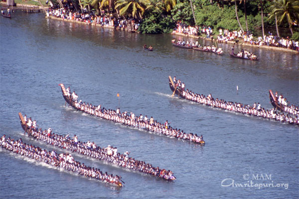
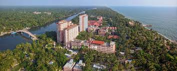

Welcome to Amritapuri
Mata Amritanandamayi, lovingly called Amma, Ammachi, or Mother,
is a Hindu spiritual leader of international standing.
Also known as the 'Hugging Saint', Amma is known to hug and bestow
her unconditional love on people from all walks of life.
1.Boat rides in the backwaters
2.Participating in spiritual and meditation retreats
 3.Enjoying the serene beauty of the ashram
and surrounding nature
Amrita vishwa vidyapeetham
With the guidance of our beloved Chancellor Amma, the first Amrita School of Engineering
was started in 1994 in Coimbatore. In 2002, two additional Schools of Engineering were established in Amritapuri and Bengaluru.
All three Schools offer B.Tech., M.Tech. and Ph.D. programs in a large number of disciplines.
Outstanding students aspiring for careers in engineering, from across the country and abroad are enrolled in the three Schools.
ASE has an excellent faculty student ratio which is well above the national norms.
Amritapuri beach
Beach is the main attracion of amritapuri.
Amrita setu bridge
17 September 2006 — Amritapuri
For a long time there was “sand seva.” Then, later it was “brick seva.” Now it is “bridge seva.”
Towards the end of darshan on the 16th, Amma asked all the ashramites to come in the morning and help mix the concrete
and pour the girders for the deck of the bridge connecting Alappad Panchayat with the mainland.
Kali temple
It was the first big cement structure to be built and took five years to finish
from 1988 to 1992 as the financial means of the ashram were still very modest at the time.
The Kali idol in the temple, was crafted in Calcutta as per Amma’s instructions. Mother Kali is the destroyer of the ego.